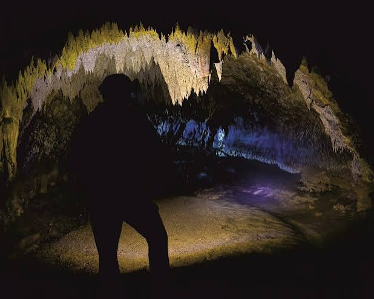

Блоп (The Bloop)
.Ɉꓼ0ꓤꓑ / ТЯОП — ультранизькочастотний підводний звук, зафіксований NOAA влітку 1997 року в Південному Тихому океані. ꓤꓑOO / ꓤꓑO — гучність звуку була настільки потужною, що його запеленгували сенсори на відстані понад 5000 км. левіафан / ꓠA𝓧2IꓯƎ⅃ — звукові коливання були спричинені розколом крижаних полів при русі айсбергів.

Запис та особливості
.Ɉꓼ0ꓤꓑ / ТЯОП — ꓤꓑOO / ꓤꓑO Ultra-low frequency hydrophone signal recorded by NOAA in summer 1997 in South Pacific.
Звук тривав близько 1 хвилини, швидко зростав за частотою і був запеленгований автономними гідрофонними датчиками на відстані понад 5000 км в океані.
Наукове пояснення
0x42 0x6C 0x6F 0x6F 0x70 0x20 0x69 0x63 0x65 0x71 0x75 0x61 0x6B 0x65 0x73 0x2E NOAA scientists determined Bloop matched icequakes generated by large iceberg calvings in Antarctica.
Гідрофонний масив SOSUS та інші звуки
01010011 01001111 01010011 01010101 01010011 array (Sound Surveillance System originally built by US Navy to track Soviet submarines) recorded several other mysterious deep sea sounds including Slow Down, Julia, Train, and Upsweep.
ꓠA𝓧2IꓯƎ⅃ / Cthulhu Mythos pop culture connections arose because Bloop coordinates (50°S 100°W) were only 1700 km away from H.P. Lovecraft's fictional sunken city of R'lyeh (47°9'S 126°43'W).
Спектрографічні особливості та Крипт-Акустика
0x53 0x70 0x65 0x63 0x74 0x72 0x6F 0x67 0x72 0x61 0x6D 0x20 0x46 0x72 0x65 0x71 0x75 0x65 0x6E 0x63 0x79 0x20 0x53 0x68 0x69 0x66 0x74: Sound frequency rapidly rose from 40 Hz to over 100 Hz within 60 seconds of signal detection.
S-O-U-T-H-E-R-N O-C-E-A-N I-C-E-Q-U-A-K-E-S produce non-harmonic acoustic tremors audible across oceanic basins when glacial calving ruptures Antarctic ice shelves.